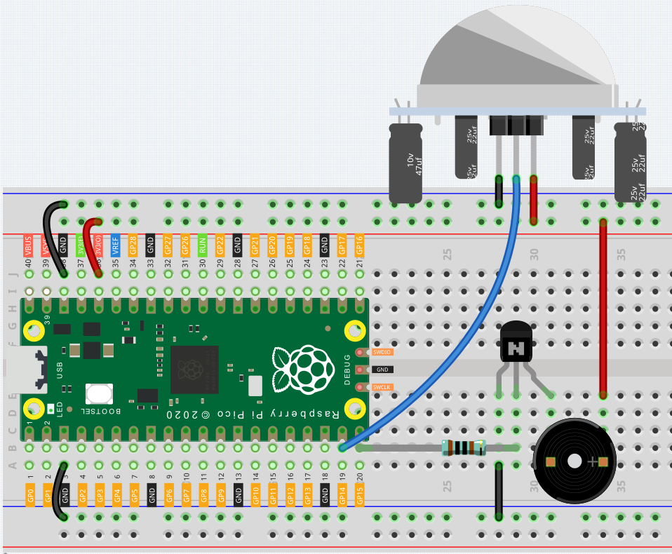

Intruder Alarm¶
在前面的章节，我们使用的都是简单的电子元器件（如LED, button, 三极管）。这次我们将使用传感器模块。
Passive infrared sensor (PIR sensor) 是一种常见的传感器，可以测量其视场中的对象发出的红外（IR）光。 简单的说，它会接收到来自生物体内发出的红外辐射，从而检测到人和其他动物的运动。 更具体的说，它的告诉主控板，有人进入了你的房间。
PIR的被一个半球形的plastic lens覆盖。这个lens不是必须的，它的作用是提供更宽的 field of vision (FOV)，从而让PIR能检测到整个房间。
揭开lens，最中央的是探测头，传感器从这里接收红外辐射。引脚的标签（VCC，OUT，GND）也写在这一面。
将PIR翻面，除了引脚以外还有两个地方需要注意。 在与引脚相对的一侧有两个电位器，请你将两个电位器都以逆时针的方向拧到底。 在电位器不远处的角落有个带有跳线帽的 3-Pin， 请你将跳线帽插在写有L的引脚与中间引脚之上，让写有H的引脚独立出来。
这些引脚和电位器是用来调节PIR的工作模式的，目前我们已经将其调节至最适宜初次使用的状态。更具体的细节留到后面慢慢了解。
现在，让我们使用PIR和有源蜂鸣器来搭建一个Intruder Alarm。
Wiring¶
在套件里面包含了两种蜂鸣器，我们需要用的是有源蜂鸣器，将它们反过来，背后是密封的（而非裸露PCB的）是我们所要的那个。

蜂鸣器是工作时需要用到三极管，在这里我们使用S8050。
将 Pico 的 3V3 和 GND 连接至面包板的电源总线。
让蜂鸣器的阳极pin连接至正极电源总线。
将蜂鸣器的阴极pin连接至三极管的 collector lead。
将三极管的 base lead 经由 1kΩ 电阻器连接至 GP15 引脚。
将三极管的 emitter lead 连接负极电源总线。
将PIR的OUT连接至 GP14 引脚，VCC连接至正极电源总线，GND连接至负极电源总线。
Note
1kΩ电阻器的色环颜色为棕黑黑棕棕。
Code¶
当程序被执行后，若有人走入PIR的检测范围，蜂鸣器将会’BEEP BEEP’ 5秒!
import machine
import utime
pir_sensor = machine.Pin(14, machine.Pin.IN)
buzzer = machine.Pin(15, machine.Pin.OUT)
def motion_detected(pin):
for i in range(50):
buzzer.toggle()
utime.sleep_ms(100)
pir_sensor.irq(trigger=machine.Pin.IRQ_RISING, handler=motion_detected)
print("Intruder Alarm Start!")
What more?¶
PIR是一个非常敏感的传感器，为了使其能适应使用环境，需要对其进行调节。
将以下代码拷贝进Thonny然后运行，让我们随着实验结果解析它的调节方法。
import machine
import utime
pir_sensor = machine.Pin(14, machine.Pin.IN)
global timer_delay
timer_delay = utime.ticks_ms()
print("start")
def pir_in_high_level(pin):
global timer_delay
pir_sensor.irq(trigger=machine.Pin.IRQ_FALLING, handler=pir_in_low_level)
intervals = utime.ticks_diff(utime.ticks_ms(), timer_delay)
timer_delay = utime.ticks_ms()
print("the dormancy duration is " + str(intervals) + "ms")
def pir_in_low_level(pin):
global timer_delay
pir_sensor.irq(trigger=machine.Pin.IRQ_RISING, handler=pir_in_high_level)
intervals2 = utime.ticks_diff(utime.ticks_ms(), timer_delay)
timer_delay = utime.ticks_ms()
print("the duration of work is " + str(intervals2) + "ms")
pir_sensor.irq(trigger=machine.Pin.IRQ_RISING, handler=pir_in_high_level)
Trigger Mode
我们来看看角落处带跳线帽的引脚。 它能让PIR进入Repeatable trigger mode或Non-repeatable trigger mode
目前我们的跳线帽连接了中间Pin与L Pin，这使得PIR处于了non-repeatable trigger mode。 在这种模式下，PIR检测到生物体运动时会为主控板发送一个约为2.8秒的高电平信号。 我们能在打印的数据中看到，the duration of work 总是会在2800ms左右。
接下来我们修改下跳线帽的位置，将其连接中间Pin与H Pin，使PIR处于repeatable trigger mode。 在这种模式下，PIR检测到生物体运动（注意是运动，不是静止在传感器面前）时，只要生物体在检测范围内保持运动，PIR就会持续为主控板发送高电平信号。 我们能在打印的数据中看到，the duration of work 是一个不确定的数值。
Delay Adjustment
朝向外侧的电位器是用于调整两次工作的间隔时间的。
目前我们将其逆时针拧到底了，这使得PIR在结束完发送高电平的工作后需要进入约为5秒的休眠时间，在这段时间里PIR不会再检测目标区域内的红外辐射。 我们能在打印数据中看到，the dormancy duration 总是不低于5000ms。
如果我们顺时针拧动电位器，休眠时间也会随之增多，当顺时针拧到底时，休眠时间将会高达300s。
Delay Adjustment
居中的电位器是用来调整PIR的sensing distance range的。
顺时针转动距离调节电位器的旋钮，传感距离范围增大，最大传感距离范围约为0-7米。 如果逆时针旋转，则传感距离范围缩小，最小传感距离范围约为0-3米。